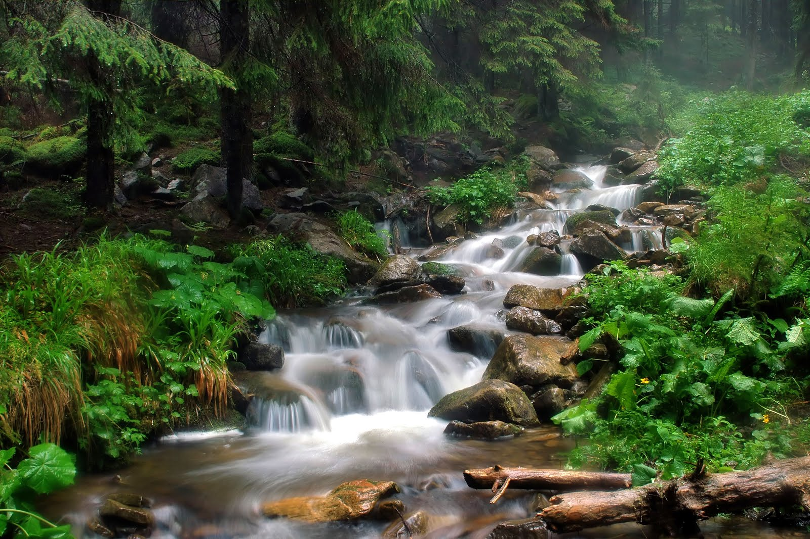

Decides seguir el río hacia arriba, hacia donde la corriente nace. Si hay tanta vida en esa dirección, debe haber oportunidades para cazar y establecerte.
Caminas junto a la orilla, sintiendo la brisa fresca del agua. Tu cuerpo aún está débil, pero el ejercicio te está ayudando a recuperar fuerzas poco a poco.
Después de un buen rato, llegas a una zona donde el río se ensancha formando un pequeño estanque natural. Hay peces visibles en el agua clara. Esto sería un lugar perfecto para cazar.
Pero entonces lo ves: hay una trampa para peces en el estanque. Hecha por humanos, con carnada fresca todavía. Lo que significa que alguien viene regularmente a revisar sus trampas.
La carnada huele deliciosa y fácil. Pero las trampas de humanos son peligrosas. Tu cuidadora te enseñó a reconocerlas y evitarlas.
Intentar robar la carnada con cuidado - necesitás comer
Alejarte y buscar otra fuente de alimento - no vale la pena el riesgo